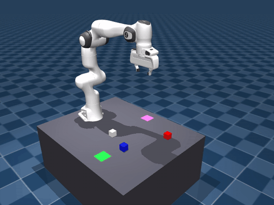
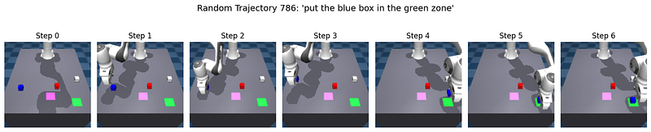
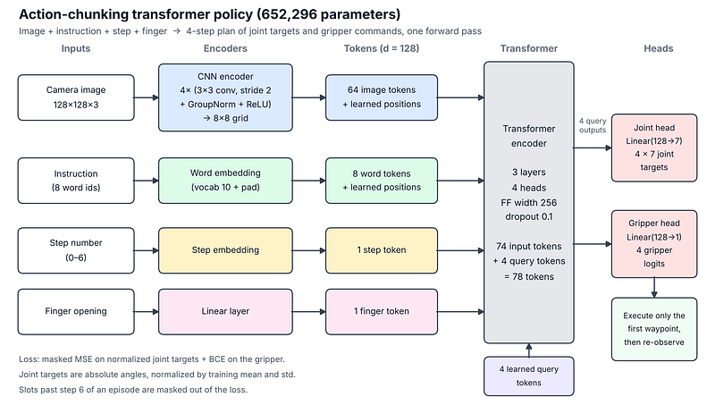
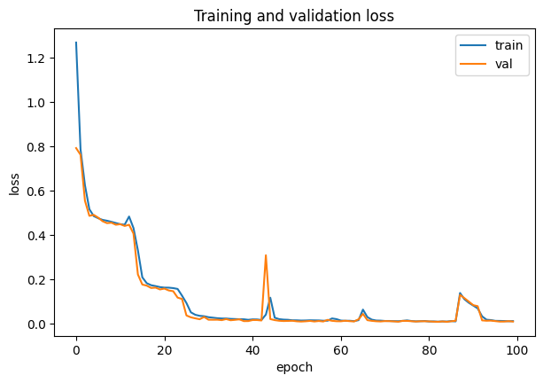
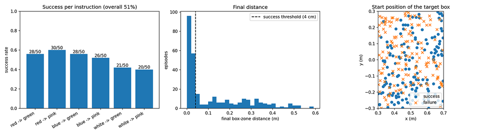
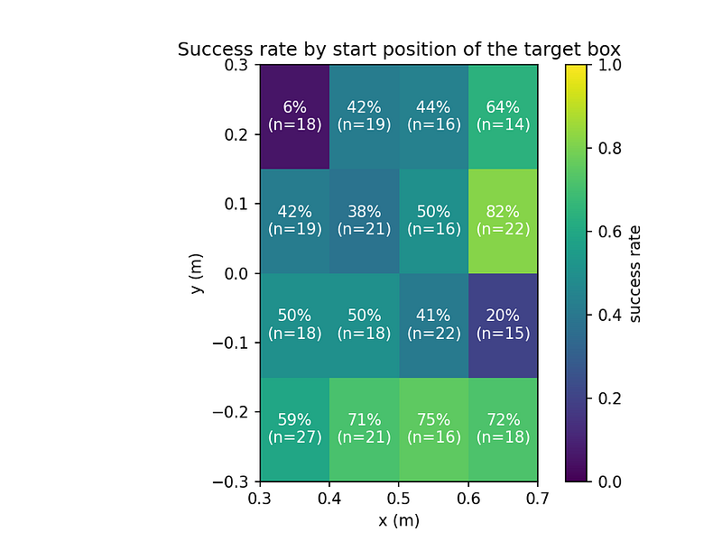

Language-Vision Pick-and-Place in MuJoCo: Behaviour Cloning a Small VLA (Part 1)
Summary
A small vision-language-action (VLA) policy controls a simulated Franka Panda arm in MuJoCo from a camera image and a text instruction such as "put the red box in the green zone". It was trained by behaviour cloning (BC) on 2,000 scripted-expert episodes and reaches 51% success (153/300 simulator rollouts) in its best scene.
The same 0.65M-parameter model went from near-zero to 51% success without any architecture change, mostly by making the scene easier to see: a white box on a beige table was almost invisible (about 0% instruction following), while a white box on a grey table worked. Scene visibility mattered more than model tweaks. This 51% policy is the frozen baseline for Part 2, where reinforcement learning improves it.

1. Project overview and goal
The goal is to build a very small VLA on a simulated robot with controllable joints and a gripper, and to understand every piece of it well enough to explain it. A VLA maps an image and a language instruction to robot actions. Part 1 is behaviour cloning: a scripted expert collects demonstrations and a transformer policy imitates them. Part 2 adds a small residual RL policy on top of the frozen BC model.
Hardware. A laptop with a GTX 1650 Ti (4 GB) on Windows in a Python 3.10 venv, used for data collection and simulator evaluation. Training ran on a free Google Colab T4.
2. Model setup (simulation)
- Robot: Franka Panda (from MuJoCo Menagerie), 7 arm joints under position control plus a gripper.
- Objects: a table, three coloured boxes and two drop zones. Every episode samples new positions (x 0.30–0.70 m, y −0.30–0.30 m) with keep-out radii so objects never overlap.
- Camera: one front "agentview" camera rendered at 128×128.
- Instruction: "put the {box} box in the {zone} zone", giving 6 instructions (3 boxes × 2 zones).
- Success: the target box centre ends within 4 cm of the zone centre and below z = 0.03 m.
3. Data collection
Demonstrations come from a scripted expert that uses damped-least-squares inverse kinematics (IK) to reach Cartesian targets. The expert succeeds on 100% of episodes. IK is used only by the expert: at test time the policy outputs joint targets directly.
Each episode has 7 steps: above the box, grasp, lift, carry, release, rise, home. Each step records the camera image, the instruction, the step number, the finger opening and the next 4 absolute joint targets (a 4-step action chunk). The dataset has 2,000 training and 200 validation episodes, giving 14,000 training samples.

4. Model architecture
The policy is a small non-autoregressive action-chunking transformer with 652,296 parameters. It reads 74 input tokens (64 image, 8 word, 1 step, 1 finger) and predicts a 4-step action chunk in one forward pass. A CNN of four stride-2 convolutions with GroupNorm turns the image into an 8×8 grid of tokens. Four learned query tokens go through a 3-layer encoder, and two linear heads output joint targets and a gripper logit. Only the first waypoint is executed before the policy re-observes (closed loop).
The loss is masked MSE on normalised joint targets plus binary cross-entropy on the gripper. GroupNorm mattered: without it the first runs stayed on a no-image plateau.

5. Training setup
- Optimizer: AdamW, learning rate 1e-3, batch size 64, 100 epochs.
- Targets: absolute joint angles normalised by the training mean and standard deviation. The best-validation-loss checkpoint is kept.
- Evaluation: each of the 6 instructions is run 50 times on new random layouts from a fixed seed (123), so every model is tested on the same episodes. Success uses the 4 cm rule above.

6. Experiments
The model and training recipe stayed fixed; only the scene changed. Each scene needed a fresh dataset and a fresh training run.
| Scene | Best val loss | Simulator success |
|---|---|---|
| 1: beige table, red / blue / yellow boxes | 0.0738 | 12.3% (37/300) |
| 2: beige table, red / blue / white boxes | 0.4374 | 0.0% (0/300) |
| 3: grey table, red / blue / white boxes | about 0.0099 | 51% (153/300) |
Swapping yellow for white was meant to make the colours more distinct, but white blended with the cream table and the white robot. Changing only the table colour to grey fixed it.

7. Results
Scene 3 success by instruction (50 rollouts each):
- Red box: green zone 28/50, pink zone 30/50
- Blue box: green zone 28/50, pink zone 26/50
- White box: green zone 21/50, pink zone 20/50
White is the weakest box (about 41%, against 58% for red and 54% for blue).
8. Analysis and lessons learned
- Visibility dominated. What the camera could see mattered more than the architecture. A grey table fixed the white box without any model change.
- Loss plateaus then sudden drops. Training sat flat, then fell sharply, and whether and when it escaped varied by run.
- Rollouts beat guessing. Success per instruction and per start position showed where the policy fails.
Failure analysis of the 51% baseline (147 failures). About 20 of 147 ended within 8 cm of the zone, so they were near misses. Failures concentrate at the top-left of the table (x about 0.3–0.45 m, y above 0.15 m). Whether failures are bad grasps or bad placement was not yet measured.

9. Limitations
- Very simple VLA: 0.65M parameters, a 10-word vocabulary and a 6-instruction template, with no pretrained vision or language model.
- Simple task: one pick-and-place with a fixed camera and scene style.
- Limited data: 2,000 expert episodes that always succeed and never recover from mistakes.
- Scene-specific: each scene needed new data and training; the model does not generalise across colours or tables.
10. Next steps
The 51% policy becomes the frozen baseline for RL. Part 2 trains a small residual policy on top of it with actor-critic and GRPO-style learning.
Code
[Link to the GitHub repository goes here.]